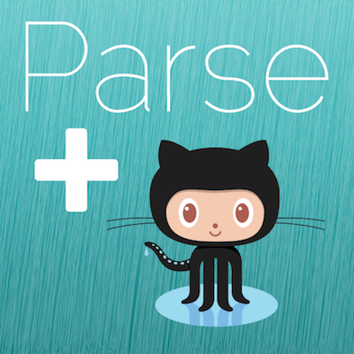
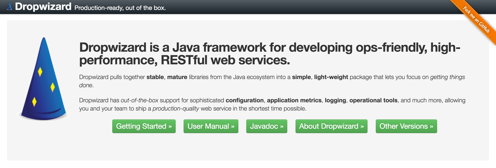
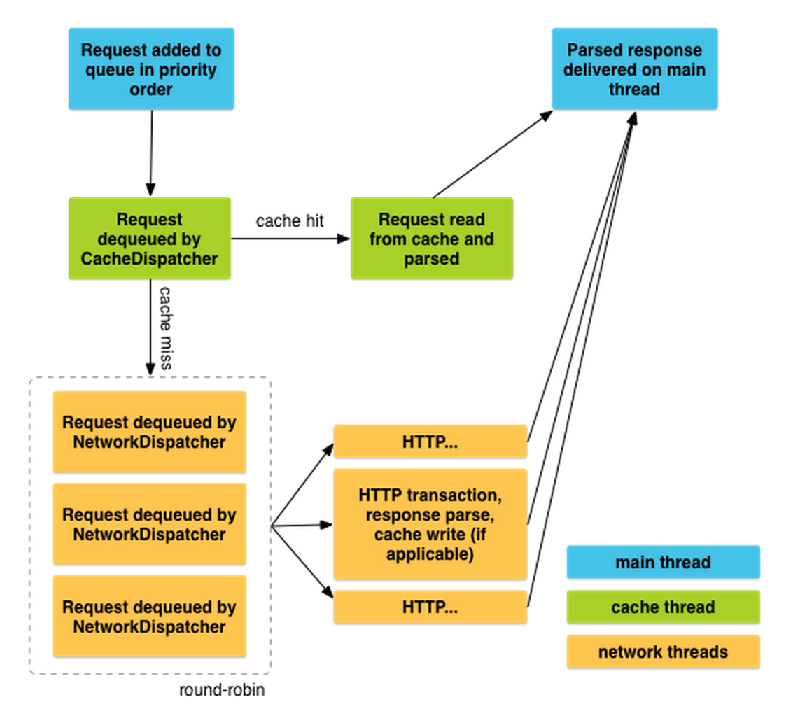

Backend
4 Android
Developers
...or Your API Swiss Knife
Antonio Mallia & Nicola Corti #droidconIT 2016 Turin
About us
Agenda
Part I
- Why a custom backend?
- RESTful API
- Framework
- Database
- JSON Web Token
Part II
- Android Vanilla
- HTTP Library
- Converters
- Async exec.
- Caching
Motivation
I'll go with a BaaS

Parse Server

Open-source
but...Many Parse features missing
Javascript
Parse alternatives
AnyPresence
Appcelerator
Appery
Backendless
CloudMine
FeedHenry
Firebase
Kii
Kinvey
Kumulos
moBack
Syncano
and many others...
Custom backend
- Flexible application logic
- Custom API
- It scales depending on the needs
- Your data is just on your server
- It can be cheaper
Android Developer Technologies
REST
Java
JSON
Gradle
What we want to build?
Framework + DB + Auth = User manager
RESTful API
Best Practices
- An API is a UI for a developer
- Use HTTP methods
- Exploit HTTP status codes
- JSON encoded bodies
- Query params for filtering, sorting, searching
- Use token based authentication
- Only SSL
HTTP methods
GET /usersRetrieves a list of users
GET /users/1Retrieves user #1
POST /usersCreates a new user
PUT /users/1Updates user #1
DELETE /users/1Deletes user #1
HTTP status codes
- 1xx: Request received, continuing process.
- 2xx: OK
- 3xx: GO there ->
- 4xx: You f*cked up!
- 5xx: I screwed up
Json encode
{
"user_id":1,
"name":"Antonio Mallia",
"username":"antonio",
"email":"me@antoniomallia.it",
"last_active":1360031425,
"created":1315711352,
"is_deleted":0
}
Query parameters
GET /users?deleted=1Filter the deleted users
GET /users?sort=name+DESCSort by name descending
GET /users?q=antonioSearch word "antonio"
Token based authentication
A RESTful API should be stateless.
Framework
hard to choose
Popular Java frameworks

Our choice
Overview
- Embedded Jetty: HTTP server directly into your project
- REST with Jersey: JAX-RS reference implementation
- Jackson for JSON: the king of JSON on the JVM
- Logback and slf4j: performant and flexible logging
- Hibernate Validator (JSR-349): for validating user input
- Guava: speed up development in Java
- Joda Time: library for dates and times
Gradle compatible
Add the dropwizard-core library as a dependency
dependencies {
compile ('com.yammer.dropwizard:dropwizard-core:'+dropwizardVersion)
}
One-JAR
One-JAR lets you package a Java application together with its dependency Jars into a single executable Jar file
buildscript {
dependencies {
classpath 'com.github.rholder:gradle-one-jar:1.0.4'
}
}
mainClassName = 'com.droidcon.it.backend.BackendApp'
task oneJar(type: OneJar) {
mainClass = mainClassName
}
Configuration file
Just need to create a simple YAML file
server:
type: simple
connector:
type: https
port: 8080
logging:
level: INFO
Can be extended with custom configuration
The application class
public class BackendApp extends Application<BackendConf> {
@Override
public void run(BackendConf configuration, Environment environment) {
// nothing to do yet
}
public static void main(String[] args) {
new BackendApp().run(args);
}
}
Hello world resource
@Path("/hello-world")
public class HelloWorldResource {
@GET
@Path("/")
public Response sayHello() {
return Response.ok("Hello world!").build();
}
@GET
@Path("/{name}")
public Response sayHello(@PathParam("name") @NotNull String name) {
return Response.ok(String.format("Hello %s!", name)).build();
}
}
Run it!
java -jar target/backend-0.0.1.jar server backend-conf.yml
As simple as that!
Database
- JSON-like documents
- Uses dynamic schemas
- No ORM needed
- Designed with scalability in mind
- No DBA necessary
Plug to Dropwizard
Add the dependencies
compile 'com.meltmedia.dropwizard:dropwizard-mongo:0.2.0'
Extend configuration
public class BackendConf extends Configuration{
@JsonProperty
private MongoConfiguration mongo;
}
Plug to Dropwizard
Initialize
public class BackendApp extends Application<BackendConf> {
MongoBundle<BackendConf> mongoBundle;
@Override
public void initialize(Bootstrap<BackendConf> bootstrap) {
bootstrap.addBundle(mongoBundle =
MongoBundle.<BackendConf>builder()
.withConfiguration(BackendConf::getMongo)
.build());
}
...
}
Get the default DB
DB db = mongoBundle.getDB();
MongoJack
Since MongoDB uses BSON, a binary form of JSON, to store its documents, a JSON mapper is a perfect mechanism for mapping Java objects to MongoDB documents.
Get user #1
GET /users/1
@GET
@Path("/{id}")
public Response getUser(@PathParam("id") @NotNull String id) {
DBCollection dbColl = db.getCollection("users");
JacksonDBCollection<User, String> coll =
JacksonDBCollection.wrap(dbCollection, User.class, String.class);
User user = coll.findOneById(id);
return Response.ok(user).build();
}
Create new user
POST /users
@Context
UriInfo uri;
@POST
@Path("/")
public Response createUser(@Valid User user) {
DBCollection dbColl = db.getCollection("users");
JacksonDBCollection<User, String> coll =
JacksonDBCollection.wrap(dbCollection, User.class, String.class);
WriteResult<User, String> result = coll.insert(user);
String id = result.getSavedId();
UriBuilder builder = uri.getAbsolutePathBuilder();
return Response.created(builder.path(id).build()).build();
}
Login
POST /login
@POST
@Path("/")
public Response login(@Valid Credentials credentials) {
DBCollection dbColl = db.getCollection("users");
JacksonDBCollection<User, String> coll =
JacksonDBCollection.wrap(dbCollection, User.class, String.class);
User user = coll.findOneById(DBQuery.and(
DBQuery.is("username", credentials.getUsername()),
DBQuery.is("password", credentials.getHashPassword())
));
if(user != null){
// Generate token
return Response.ok(token).build();
}
return Response.status(Response.Status.NOT_FOUND).build();
}
JSON Web Token (JWT)
"JSON-based open standard (RFC 7519) for passing claims between parties in web application environment."
Used to send information that can be verified
and trusted by means of a digital signature
JWT Structure
JWT consist of three parts separated by dots (.)
eyJhbGciOiJIUzI1NiIsInR5cCI6IkpXVCJ9.
eyJuYW1lIjoiRHJvaWRjb24iLCJhZG1pbiI6dHJ1ZX0.
x6Uvbp2N8M64yK4tV4rj971Di8xErW-vMEFFL7IN084
JWT Header
Consist of two parts:
- Type of the token
- Hashing algorithm
{"alg": "HS256", "typ": "JWT"}
Base64 encoded
JWT Payload
Contains the claims
- Reserved claims: iss (issuer), exp (expiration time), etc.
- Public claims: IANA JSON Web Token Registry
- Private claims: producer and consumer agreenment
{"name": "Droidcon", "admin": true}
JWT Signature
Encoded header and payload with a secret key
The signature is used to verify the sender of the JWT and to ensure that the message wasn't changed
HMACSHA256( base64UrlEncode(header) + "."
+ base64UrlEncode(payload), secret)
Plug to Dropwizard
Add the dependencies
dependencies {
compile (
'io.dropwizard:dropwizard-auth:'+dropwizardVersion,
'com.github.toastshaman:dropwizard-auth-jwt:'+dropwizardVersion+'-0'
)
}
Authenticator
UserPrincipal is the one from java.security
public class Auth implements Authenticator<JsonWebToken, UserPrincipal>
{
@Override
public Optional<UserPrincipal> authenticate(JsonWebToken token) {
final JsonWebTokenValidator expiryValidator =
new ExpiryValidator();
expiryValidator.validate(token);
// Check on DB
if(token.claim()...){
return Optional.of(new UserPrincipal(...));
}
return Optional.absent();
}
}
Use it in resource
Add to the header:
Authorization: Bearer <token>
@Path("/secret")
public class SuperSecretResource {
@GET
@Path("/")
public Response secret(@Auth UserPrincipal user){
return Response.ok("Secret code").build();
}
}
Generate a token
final JwtClaims claims = new JwtClaims();
claims.setExpirationTimeMinutesInTheFuture(30);
claims.setClaim("username","...");
final JsonWebSignature jws = new JsonWebSignature();
jws.setPayload(claims.toJson());
jws.setAlgorithmHeaderValue(HMAC_SHA256);
jws.setKey(new HmacKey(tokenSecret));
Let's move to the client...
Android Vanilla
Prior to Froyo, HttpURLConnection had some frustrating bugs. In particular, calling close() on a readable InputStream could poison the connection pool...
...the large size of this API makes it difficult for us to improve it without breaking compatibility. The Android team is not actively working on Apache HTTP Client.
public static JSONObject requestRestResponse() {
HttpURLConnection urlConnection = null;
try {
// create connection
URL urlToRequest = new URL("http://mybackend.com/v1/req");
urlConnection = (HttpURLConnection)
urlToRequest.openConnection();
urlConnection.setConnectTimeout(CONNECTION_TIMEOUT);
urlConnection.setReadTimeout(DATARETRIEVAL_TIMEOUT);
// handle issues
int statusCode = urlConnection.getResponseCode();
if (statusCode == HttpURLConnection.HTTP_UNAUTHORIZED) {
// handle unauthorized (if service requires user login)
} else if (statusCode != HttpURLConnection.HTTP_OK) {
// handle any other errors, like 404, 500,..
}
// create JSON object from content
InputStream in =
new BufferedInputStream(urlConnection.getInputStream());
return new JSONObject(getResponseText(in));
} catch (MalformedURLException e) {
// URL is invalid
} catch (SocketTimeoutException e) {
// data retrieval or connection timed out
} catch (IOException e) {
// could not read response body
} catch (JSONException e) {
// response body is no valid JSON string
}
return null;
}} finally {
if (urlConnection != null) {
// Don't forget to release resources
urlConnection.disconnect();
}
}
return null;
}
Don't forget about NetworkOnMainThreadException. The most common solution for this kind of problems are AsyncTasks!
Have you ever wrote?
@Override
protected void onPostExecute(String result) {
if (getActivity() == null){
return; // Here Activity is gone...
}
...
}
- Request cancellation
- Parallel request
- Scheduling
- Caching
- ...and boilerplate?
HTTP Client libraries
If you have more than
1K lines
of code for creating and handling your HTTP requests...
Ask yourself if you're doing it right!
- Retrofit
- Volley
- OkHTTP
- Picasso
- ...and more
Retrofit 2.0
- From square.github.io
- Works with Java Annotations
- Support both Sync/Async execution
- Apache 2 Licensed
- Recently released (2016-03-11 v2.0.0)
compile 'com.squareup.retrofit2:retrofit:2.0.0'
Usage
public interface GitHubService {
@GET("users/{user}/repos")
Call<List<Repo>> listRepos(@Path("user") String user);
}
Retrofit retrofit = new Retrofit.Builder()
.baseUrl("https://api.github.com/")
.build();
GitHubService service = retrofit.create(GitHubService.class);
public interface GitHubService {
@GET("users/{user}/repos")
Call<List<Repo>> listRepos(
@Path("user") String user);
@GET("users/{user}/repos")
Call<List<Repo>> listRepos(
@Path("user") String user,
@Query("type") String type);
@GET("users/{user}/repos")
Call<List<Repo>> listRepos(
@Path("user") String user,
@QueryMap Map<String, String> options);
}
public interface GitHubService {
@Headers("User-Agent: my-Awesome-Retrofit-powered-app")
@GET("users/{user}/repos")
Call<List<Repo>> listRepos(@Path("user") String user);
@GET("gists/public")
Call<List<Gist>> listGists(@Header("User-Agent") String uAgent)
}
public interface GitHubService {
@GET
Call<List<User>> getCustomUsers(@Url String reqUrl);
@POST("gists")
Call<Gist> createGist(@Body GistRequest grequest);
}
Converters
- Gson
com.squareup.retrofit:converter-gson - Jackson
com.squareup.retrofit:converter-jackson - Moshi
com.squareup.retrofit:converter-moshi - Protobuf
com.squareup.retrofit:converter-protobuf - Wire
com.squareup.retrofit:converter-wire - Simple XML
com.squareup.retrofit:converter-simplexml
You can also implement yours with Converter.Factory
Retrofit retrofit = new Retrofit.Builder()
.baseUrl("https://api.github.com/")
.addConverterFactory(JacksonConverterFactory.create())
.build();
service = retrofit.create(GitHubService.class);
Gson gson = new GsonBuilder()
.setDateFormat("yyyy-MM-dd'T'HH:mm:ssZ")
.create();
Retrofit retrofit = new Retrofit.Builder()
.baseUrl("https://api.github.com/")
.addConverterFactory(GsonConverterFactory.create(gson))
.build();
service = retrofit.create(GitHubService.class);
Call Adapters
You can plug a Call Adapter to work with:
- Observables (RxJava)
- ListeanableFuture (Guava)
- CompletableFuture (Java8)
// Sync call
Call<Repo> call = service.loadRepo();
Response<Repo> response = call.execute();
// Async call
Call<Repo> call = service.loadRepo();
call.enqueue(new Callback<Repo>() {
@Override
public void onResponse(Response<Repo> response) {
// Get result Repo from response.body()
}
@Override
public void onFailure(Throwable t) {
// Handle failure
}
});
Retrofit retrofit = new Retrofit.Builder()
.baseUrl("https://api.github.com/")
.addCallAdapterFactory(RxJavaCallAdapterFactory.create())
.build();
public interface APIService {
@GET("gists/public")
Call<Gist> getGists();
@GET("gists/public")
Observable<Gist> getGistsRx();
}
Volley
- From Google
- Available from the AOSP repo
- Excellent for populating the UI with text and images
- Excellent for caching
- Apache 2 licensed
- Not well documented :(
compile 'com.android.volley:volley:1.0.0'
Thread model
Usage
RequestQueue queue =
Volley.newRequestQueue(getApplicationContext());
StringRequest request = new StringRequest(
Request.Method.GET,
"https://api.github.com/gists/public",
this::handleResponse,
this::handleError);
request.setShouldCache(true);
request.setTag(requestTag); // A class member 'requestTag'
queue.add(request);
@Override
protected void onStop() {
queue.cancelAll(requestTag);
super.onStop();
}
Don't forget to do it!
ImageLoader mImageLoader;
NetworkImageView mNetworkImageView;
private static final String IMAGE_URL =
"http://i.imgur.com/RLKixQW.png";
// Retrieve the ImageLoader (singleton/application/...)
// Retrieve the NetworkImageView (findViewById)
mNetworkImageView.setImageUrl(IMAGE_URL, mImageLoader);
<com.android.volley.toolbox.NetworkImageView
android:id="@+id/networkImageView"
android:layout_width="300dp"
android:layout_height="300dp"
android:layout_centerHorizontal="true" />
mImageLoader = new ImageLoader(mRequestQueue,
new ImageLoader.ImageCache() {
private final LruCache<String, Bitmap> cache = new LruCache<>(20);
@Override
public Bitmap getBitmap(String url) {
return cache.get(url);
}
@Override
public void putBitmap(String url, Bitmap bitmap) {
cache.put(url, bitmap);
}
});
~$ adb shell setprop log.tag.Volley VERBOSE
D/Volley (670 ms) [ ] https://api.github.com/users/cortinico
D/Volley (+0 ) [ 1] add-to-queue
D/Volley (+0 ) [238] cache-queue-take
D/Volley (+0 ) [238] cache-miss
D/Volley (+10 ) [242] network-queue-take
D/Volley (+630 ) [242] network-http-complete
D/Volley (+0 ) [242] network-parse-complete
D/Volley (+0 ) [242] network-cache-written
D/Volley (+0 ) [242] post-response
D/Volley (+30 ) [ 1] done
D/Volley (10 ms) [ ] https://api.github.com/users/cortinico
D/Volley (+0 ) [ 1] add-to-queue
D/Volley (+0 ) [238] cache-queue-take
D/Volley (+0 ) [238] cache-hit
D/Volley (+0 ) [238] cache-hit-parsed
D/Volley (+0 ) [238] post-response
D/Volley (+10 ) [ 1] done
Let's try Retrofit on our User Manager...
Our Backend API
public interface UserInterface {
@GET("users")
Call<List<User>> getUsers();
@GET("users")
Call<List<User>> getUsers(@Query("deleted") int isDeleted);
@GET("users")
Call<List<User>> getUsers(@Query("sort") String sort);
@GET("users")
Call<List<User>> getUsers(@QueryMap Map<String, String> params);
@GET("users")
Call<List<User>> searchUsers(@Query("q") String query);
}
public interface UserInterface {
@GET("users/{id}")
Call<User> getUser(@Path("id") int userid);
@POST("users")
Call<User> createUser(@Body User u);
@PUT("users/{id}")
Call<User> updateUser(@Path("id") int userid, @Body User user);
@DELETE("users/{id}")
Call<User> deleteUser(@Path("id") int userid);
@GET("secret")
Call<Secret> getSecret(@Header("Authorization") String secret);
}
Which client?
- Want less and elegant code? ...Retrofit!
- Want control over scheduling/caching? ...Volley!
- Want image management? Volley! ...or Retrofit + Picasso
- Default choose? ...Retrofit!
Recap
- You can simply write your backend with Java!
- Development can be integrated inside Android Studio.
- Get rid of boilerplate HTTP code.
- ...and unleash the power of Caching.
Questions?
github.com/backend4android/slides